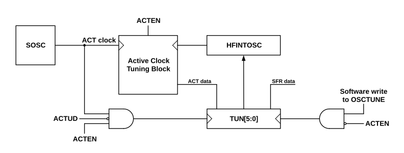

Many applications, such as those using UART communication, require an oscillator with an accuracy of ± 1% over the full temperature and voltage range. To meet this level of accuracy, the Active Clock Tuning (ACT) feature utilizes the SOSC frequency of 32.768 kHz to adjust the frequency of the HFINTOSC over voltage and temperature.
Active Clock Tuning is enabled via the Active Clock Tuning Enable (ACTEN) bit. When ACTEN is set (ACTEN = 1), the ACT module
uses the SOSC time base to measure the HFINTOSC frequency and uses the HFINTOSC
Frequency Tuning (TUN) bits to adjust the HFINTOSC frequency. When ACTEN is clear (ACTEN =
0), the ACT feature is disabled, and user software can utilize the
TUN bits to adjust the HFINTOSC frequency.
The figure below shows the Active Clock Tuning block diagram.
